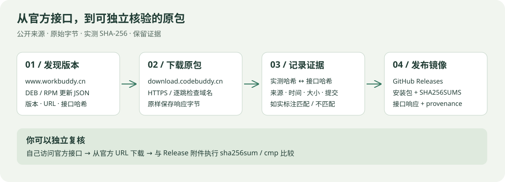

OFFICIAL DOWNLOADS / LINUX x86_64
WorkBuddy，
从官方来源下载。
追踪腾讯发布的 Linux 安装包，保留版本记录。所有下载链接直接指向上游，本项目不修改、不重新封装安装包。
包从哪里来？如何验证？

公开更新接口按平台返回 DEB / RPM 的版本与官方 URL。镜像任务只保存原始下载字节，不解包、不重打包；每个新 Release 附上 SHA256SUMS、原始接口响应和来源记录。
先用 sha256sum -c SHA256SUMS 检查附件，再从官方 URL 独立下载并比较。本站生成的校验文件不是官方签名；接口哈希与实测哈希不一致时，发布说明会明确标注。
Releases 原包镜像 ↗ · 完整原理与独立核验步骤 ↗ · 自动发布运行记录 ↗
请选择 official- 开头的镜像 Release；旧 v5.4.5 是历史社区重新封装版本。计划每小时检查，实际执行状态请查看 Actions。
当前版本
正在读取版本记录…
历史记录
从本站首次观测开始记录；同版本的链接或接口哈希变化也会留档。历史链接可能被上游移除。
| 版本 | 格式 | 首次发现 | 官方下载 |
|---|